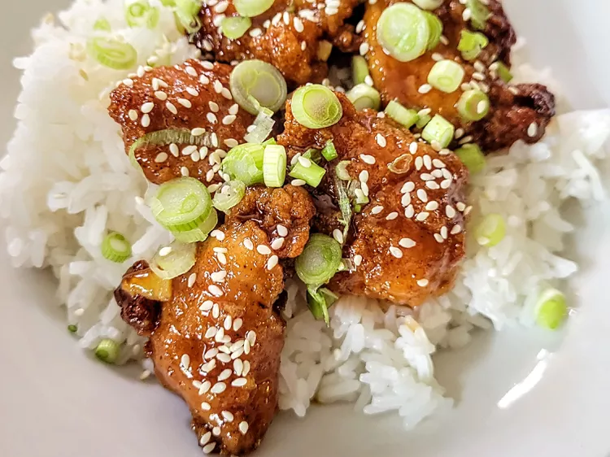

Orange Chicken

This 4-ingredient orange chicken made with frozen chicken tenders is great for when you’re craving takeout. It’s so simple to make at home, is very budget-friendly, and only takes 4 ingredients. I serve it over rice, topped with green onions and sesame seeds.
ingredients:
- 1 Cup orange marmalade
- 1/2 Cup BBQ sauce
- 1/4 Low sodium soy sauce
- 1 Bag frozen fully cooked chicken nuggets
- Sliced green onions (optional)
- Sesame seeds (optional)
Directions:
- Preheat the oven to 400 degrees F (200 degrees C). Place frozen nuggets in a single layer on a baking sheet.
- Bake in the preheated oven until hot and crispy, 11 to 13 minutes, or according to package directions.
- Meanwhile, whisk marmalade, BBQ sauce, and soy sauce together in a small saucepan and heat over low heat until hot, about 5 minutes.
- Place nuggets in a large bowl. Drizzle sauce over the top. Toss to coat.